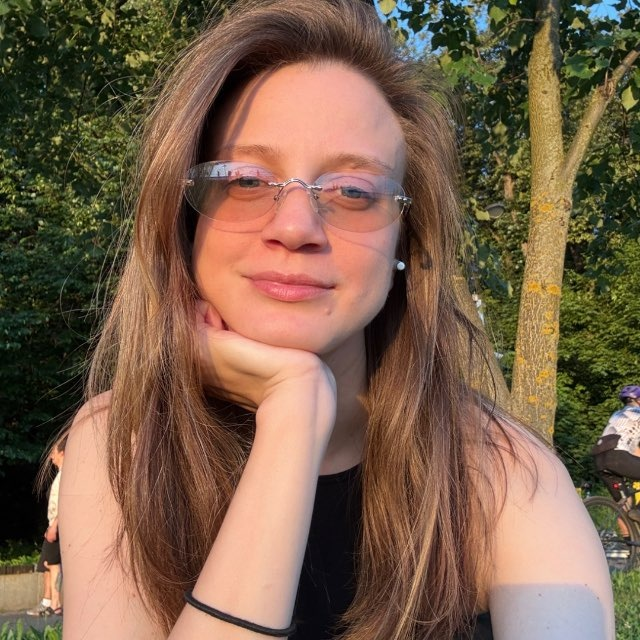

Главный фокус
Думать шире интерфейса
Понять потребность, проверить предположения и объяснить, почему продукт должен работать именно так
Кейс · Повышение квалификации
Новый продукт, новая команда и опыт, который помог
по-новому взглянуть на привычную работу
01 / О курсе
Командный проект в рамках программы повышения квалификации для дизайнеров Сбера. Возможность пройти весь продуктовый путь за пределами повседневных задач
Главный фокус
Понять потребность, проверить предположения и объяснить, почему продукт должен работать именно так
Формат
Лекции и воркшопы с экспертами, командные задания, работа с кураторами и итоговый проект. Всё параллельно с основной работой
Команда
Встречи после работы, разные взгляды на задачу и общие решения. Учились не только проектировать, но и слышать друг друга
На старте обучения мы распределили роли, но на практике работали совместно над всеми этапами: исследованиями, продуктовой логикой, интерфейсами и подготовкой защиты
Что требовалось
Личная мотивация
Не ждала от курса каких-то откровений. Хотелось переключиться с повседневных рабочих задач на другой продукт, посмотреть на знакомые процессы свежим взглядом и заодно получить официальное удостоверение о повышении квалификации
Главное
Прошли полный продуктовый цикл: исследования, гипотезы, сценарии, интерфейсы и метрики. Работали в новой команде параллельно с основными задачами
02 / Исследования
Начали с гипотез о поездках на события. Интервью с реальными людьми помогли отделить наши представления от их опыта
Отбор идей
До исследований мы собрали несколько идей для будущего продукта. Каждую предложили на общее обсуждение, сравнили направления и выбрали одну для дальнейшей работы
01 / EDTECH
Персональный помощник для подготовки к экзаменам и сертификациям. Адаптирует программу, объясняет ошибки и отслеживает прогресс
03 / LIFESTYLE
Цифровой шкаф, который помогает собирать образы с учётом погоды, планов и личных предпочтений
04 / HOME
Планирование ремонта, AR-примерка интерьера, расчёт бюджета и поиск специалистов в одном сервисе
05 / CULTURE & AR
Цифровые истории и арт-объекты, привязанные к реальным городским локациям, которые можно открывать и создавать
06 / EVENT TRAVEL
ВыбралиПутешествие начинается с события, а не с направления
Пользователь выбирает концерт, матч или фестиваль, а сервис помогает собрать вокруг него поездку: билеты, дорогу, проживание и логистику
Идея объединила событийную и travel-тематику, позволяла исследовать понятный сценарий и проектировать комплексное решение
Каждый заранее подготовил идеи. Затем созвонились, обсудили предложения и единогласно остановились на Event First
01 / Аудитория
Люди, которые готовы отправиться в другой город ради концерта, фестиваля, спортивного матча или другого значимого события
Основной сегмент — гипотеза
Жители России, которые рассматривают события как повод путешествовать
Ключевой триггер
Сначала возникает желание посетить событие, затем необходимость организовать поездку
02 / Потребности и сложности
Удобные даты, понятная стоимость, подходящее жильё и возможность самостоятельно выбирать компоненты поездки
Информация разбросана по сервисам, сложно сопоставлять варианты и удерживать общий план поездки
03 / Продуктовая гипотеза
Дать пользователю отправную точку — событие — и возможность гибко собрать поездку под свои условия
01 / Контекст рынка
Пользователь может отдельно найти событие, купить билет, забронировать дорогу и жильё. Мы изучили существующие альтернативы и посмотрели, насколько они помогают организовать поездку вокруг конкретного события
02 / Сравнение альтернатив
| Категория и сервисы | Что предлагают | Ограничения |
|---|---|---|
| Билетные агрегаторы Яндекс Афиша, Kassir | Продажа билетов на события |
Не планируют дорогу и жильё
|
| Тревел-агрегаторы Aviasales, Островок, Суточно | Поиск дороги и жилья |
Не привязаны к конкретному событию
|
| Готовые event-туры vibee, on location | Готовые пакеты на популярные события |
Высокая цена и ограниченный выбор
|
| Друзья и сообщества Telegram, Discord | Советы, опыт, совместные поездки |
Нет единого процесса организации
|
| ИИ-планировщики GPT, Layla | Маршруты и рекомендации |
Не специализируются на event-поездках
|
01 / Подход
До интервью мы сформулировали гипотезы о том, как люди организуют поездки на события: от выбора мероприятия до возвращения домой. Хотели проверить реальные привычки, сложности и потребности пользователей
02 / Направления исследования
Как находят события, принимают решение и готовятся к поездке
Какими сервисами пользуются и где хранят информацию
Как оценивают расходы и балансируют цену с удобством
Что происходит при отменах, переносах и изменениях планов
Как договариваются, координируются и делят расходы
03 / Подготовка к интервью
Вместо прямых вопросов о желаемых функциях мы просили людей вспомнить конкретную поездку: как они её планировали, на что тратили время, какие решения принимали и что пошло не так
01 / Подход
Разбирали реальные поездки: что люди делали, какие решения принимали и с какими трудностями сталкивались
02 / Сценарий интервью
Выбор события и первые действия
Сервисы, жильё, деньги и компания
Дорога, площадка и непредвиденные ситуации
Что получилось и что пошло не так
03 / Истории пользователей
Три реальные истории из наших интервью
UFC, Баку
Заплатила 15 000 ₽ за билеты номиналом 3 000 ₽. Разницу оформили как невозвратный сбор
Проблема: Непрозрачная стоимость
Концерт, Тбилиси
После концерта не смог вызвать такси. Пришлось возвращаться домой пешком к пяти утра
Проблема: Логистика дня события
Фестиваль
Потратила около 10 часов на поиск жилья рядом с площадкой. Столкнулась с ограниченным выбором и завышенными ценами
Проблема: Поиск жилья
04 / Наблюдения
Билеты, адреса и расписания хранятся в разных сервисах
При выборе жилья и транспорта приходится искать компромисс
Дорогу до площадки и обратно не всегда продумывают заранее
05 / Следующий этап
После интервью мы сопоставили реальные ответы с нашими предположениями: что подтвердилось, что не подтвердилось и какие новые наблюдения появились
01 / Процесс валидации
Каждый участник команды проанализировал своё интервью и сопоставил ответы с гипотезами. Затем мы собрали общую матрицу, созвонились и вместе обсудили результаты
Разобрали ответы респондентов
Сопоставили ответы с гипотезами
Обсудили расхождения и выводы
02 / Результат проверки
6 из 27подтвердились
Часть предположений подтвердилась, часть — лишь частично. Девять гипотез не получили подтверждения. Это помогло пересмотреть приоритеты и не переносить в продукт функции только потому, что они казались полезными
03 / Ключевые инсайты
Покупка билета запускает подготовку поездки. Остальные компоненты пользователь собирает вокруг события
Билеты, транспорт, жильё, чаты и карты распределены между разными сервисами
Как добраться, попасть на площадку и вернуться обратно — одна из наиболее заметных сложностей
Пользователям важнее подобрать комфортный вариант без переплаты, чем вести подробный бюджет
04 / От данных к решениям
Мы пересмотрели первоначальные идеи, уточнили приоритеты и определили, какие пользовательские задачи действительно стоит решать. Эти выводы стали основой дальнейшего проектирования
Value Proposition Canvas
Сопоставили задачи и проблемы пользователей с возможностями продукта, чтобы определить, какую ценность должен создавать Event First
Наведите на сектор или нажмите, чтобы узнать подробнее
01 / Фокус MVP
Сфокусировались на сборке поездки вокруг билета: удобные варианты дороги и жилья, понятный выбор и подготовка к событию
02 / Состав релиза
От черновика поездки и сквозных фильтров до проверки билетов, логистики события, напоминаний и возможности поделиться планом
Черновик и сквозные фильтры
Проверка продавца, напоминания и логистика
Возможность поделиться планом
03 / Границы релиза
Часть сценариев оставили на следующие релизы, чтобы не увеличивать сложность продукта до проверки его основной ценности
Более сложные сценарии бронирования, оплаты и организации совместных поездок
01 / Характер общения
Говорим как человек, который уже бывал здесь: знаем нюансы, предупреждаем о сложностях и подсказываем следующий шаг. Без канцелярита, лишней заботливости и пустых обещаний
03 / Принципы и границы
Предупреждаем заранее, объясняем простыми словами, честно называем цену и даём следующий шаг
Не шутим о безопасности, не скрываем комиссии, не обещаем неподтверждённого и не используем канцелярит
Наш процесс
Что сложно в поездке и как люди справляются сейчас?
Разбирали конкретные поездки, решения и трудности
Сопоставили ответы и уточнили ядро продукта
Что оказалось важным
Покупка билета, оплата и логистика на месте оказались ощутимыми точками сложности. При этом готовый вариант поездки должен оставаться гибким
Как изменилось решение
Предложить основу поездки и позволить заменить любой компонент: дорогу, жильё или трансфер
В итоговых выводах исследования трекер бюджета, планировщик по дням, единое хранилище документов и снятие стресса при отменах не стали основой ценностного предложения. Это выводы учебного исследования, а не универсальное описание всех путешественников
03 / Проект
Концепция Event First, интерфейсы, визуальная система и метрики, по которым планируем оценивать ценность продукта
01 / Концепция продукта
Event First помогает собрать поездку вокруг мероприятия: выбрать билет, подобрать дорогу и жильё, подготовиться ко дню события — без ручного перебора множества сервисов
02 / Главная метрика
NSM
Собранной считаем поездку, в которой есть билет на событие и хотя бы один забронированный компонент — дорога или жильё
03 / Ключевые сценарии
04 / Цветовая палитра
Нейтральная база не отвлекает от афиш. Фиолетовый помогает ориентироваться, лайм выделяет активные действия
05 / Дизайн-система
Базовые элементы и состояния, из которых собираются пользовательские сценарии

Event First / Концепция
От билета к готовому плану: дорога, жильё и логистика в одном сценарии с возможностью самостоятельно выбирать компоненты
NSM / Главная метрика
Билет на событие + хотя бы один забронированный компонент поездки
Созвоны, дедлайны, споры о решениях и совместная работа в Figma. Не всегда идеально по процессу, зато с настоящей командной работой

05 / Выводы
Другой контекст помог посмотреть на привычную работу по-новому: через команду, исследование и собственные решения
Командная работа
Договариваться, обсуждать разные подходы и двигаться вместе — такая же часть работы, как исследование и интерфейсы
ИИ в процессе
ИИ помогал с гипотезами, анализом, метриками и текстами. Ответы обсуждали, исправляли и дополняли опытом команды
Личный инсайт
Ускорение работы полезно. Но важно продолжать задавать вопросы, проверять выводы и понимать, почему принимаешь решение